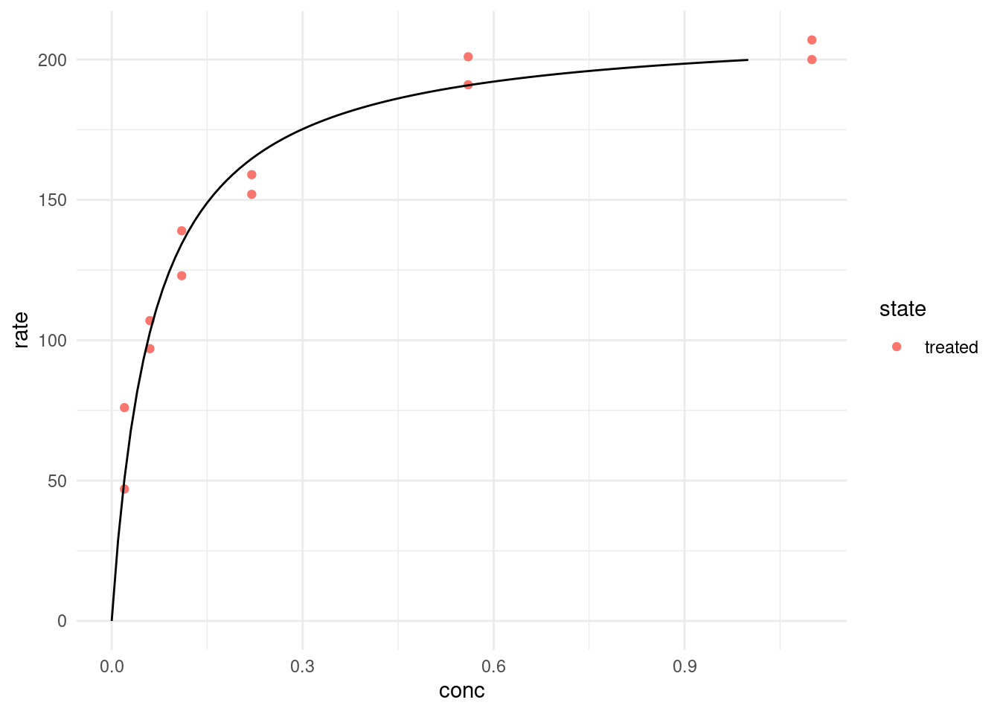

7 Fallacies, Correlation and Regression
… in which we hear Stories of Warplanes, Correlation and Regression and explore the Datasaurus Dozen.
7.1 Setup
7.2 Data Considerations
7.2.1 1943
It is 1943. The second World War is well underway, ravaging large parts of Europe. Military aircraft that had first entered the stage in World War I are now reaching their peak importance as they rain fire from the skies. But the Allied forces are facing a problem. As warplanes get better, so do anti-aircraft systems. In an effort to improve the survival of their fleet, the US military starts examining the planes returning from skirmishes with the opposing forces. They characterize the pattern of bullet holes in the metal hull, meticulously noting down each hit that the plane sustained. The resulting picture is better summarized in the modern, redrawn version below.

After taking a look at the data they gathered, the military is ready to rush into action. To improve the endurance of their aircraft, the plan is to reinforce the parts of the plane that were most often hit by bullets. With stronger wings and a sturdier body of the plane, they think, surely more pilots will come back from their missions safely. They were wrong.
But the pilots where in luck. The military also consulted with the Statistics Research Group at Columbia University. A man named Abraham Wald worked there. In his now unclassified report “A method of estimating plane vulnerability based on damage of survivors”, he argued against the generals’ conclusion (Wald 1980). Instead of the most-hit parts of the planes, the least-hit parts are to be reinforced.

Instead of the most-hit parts, the least-hit parts are to be reinforced.
The reason for this seemingly counterintuitive result is what is now known as survivorship bias. The data that was collected contained only survivors, those planes that sustained damage not severe enough to hinder them from coming back after their mission. The aircraft that where hit in other places simply didn’t make it back. Consequently, Wald advised to reinforce the engines and the fuel tanks.
7.2.2 Thinking further
This is but one of a multitude of biases, specifically a selection bias, that will influence the quality of the inferences you can draw from available data. Keep in mind, data is not objective and never exists in a vacuum. There is always context to consider. The way the data was collected is just one of them. A lot of these ideas seem obvious in hindsight, which incidentally is another bias that social psychologists call hindsight bias, but they can sometimes be hard to spot.
A common saying is that music was better back in the days, or that all the old music still holds up while the new stuff on the radio just sounds the same. Well, not quite. This is also survivorship bias at work. All the bad and forgettable songs from the past just faded into oblivion, never to be mentioned again, while the songs people generally agreed to be good survived the ravages of time unscathed. A similar thing happens with success in general, not just songs. If you ask any CEO high up the corporate ladder, a millionaire, or the author of a book that reads “How to get rich”, they are sure to have a witty anecdote about how their persistence, or their brilliance, or charisma got them to where they are now. What we are not seeing is all the people just as witty, just as charismatic or even just as persistent that where simply not as lucky. Very few people will tell you this. Because it takes a whole lot of courage to admit that ones success is based on luck and privilege.
And to take it back to the scientific context: When you are planning an experiment for the lab, always ask whether your data collection process can in some way be biased towards what you are trying to show.
I leave you with this:
weird how every time you see this image on twitter it has a ton of retweets pic.twitter.com/VALAKdeheP
— Jake VanderPlas (@jakevdp) December 8, 2020
And from this cautionary tale we jump straight back into RStudio.
7.3 Sidenotes
7.3.1 Glue and Inline R Code
Using paste to create a text in which the values of variables are inserted can be painful.
name <- "Jannik"
age <- 26
text <- paste(name, "is", age, "years old.")
text[1] "Jannik is 26 years old."The glue package makes it a breeze. Everything inside of curly braces in the text inside of the glue function will be evaluated as regular R code, enabling us to write text quite naturally:
text <- glue("{name} is {age} years old.")
textJannik is 26 years old.I hope you are not too confused by the package and it’s main function having the same name.
glue("{name} is {age + 10} years old.")Jannik is 36 years old.7.3.2 Inline R code
Using the a backtick followed by the letter r we can add the results of code right into the text sections of Rmarkdown reports:
1 + 1 = 2.
Jannik is 26 years old.
7.3.3 Best Practices
Speaking of being careful. There is one rule I can give you to make your data analysis more secure:
Your raw data is sacred! Do not ever modify it or save over it.
This is even more important when, for example, using excel to preview a csv file. Under no circumstances should you hit the save button in excel when you are looking at the raw data. With approximately one-fifth of genomic research papers containing errors in the gene lists, because excel converted genes such as SEPT2 (Septin 2) into dates, you can see why (Ziemann, Eren, and El-Osta 2016). Biologists have since given up and renamed the genes that where commonly converted into dates… but the point still stands. This caution is of course also necessary when analyzing data with R, not just excel. When we read in the raw data and save a processed version, we create a new file, or even better, a new folder for it. A good convention for example would be do divide your data into a raw and derived folder.
7.4 Covariance, Correlation and Regression

Last week, we talked about a measure of the spread of a random variable called the variance.
\[var(X) = \frac{\sum_{i=0}^{n}{(x_i-\bar x)^2}}{(n-1)}\]
Today, we are extending this idea to 2 random variables. Because the normal distribution is so common, we are using two normally distributed variables.
N <- 50
df <- tibble(
x = rnorm(N),
y = rnorm(N)
)
m_x <- mean(df$x)
m_y <- mean(df$y)
ggplot(df, aes(x, y)) +
geom_vline(xintercept = m_x, alpha = 0.8, color = "midnightblue") +
geom_hline(yintercept = m_y, alpha = 0.8, color = "midnightblue") +
geom_point(fill = "white", color = "black")We also added lines for the means of the two random variables. Maybe I should have mentioned this more clearly earlier on, but the general convention in statistics is that random variables are uppercase and concrete values from the distribution have the same letter but lowercase.
We now get the covariance of X and Y as:
\[cov(X,Y)=\text{E}\left[(X-\text{E}\left[X\right])(Y-\text{E}\left[Y\right])\right]\]
The expected value \(E[X]\) is just a fancy way of saying the mean of X. If we asses the contribution of individual points towards the covariance, we can understand it quite intuitively. A point that has a higher x than the mean of X and a higher y than the mean of Y (top right quadrant) will push the covariance towards positive values. Likewise, a point in the bottom left quadrant will have negative differences with the X and Y mean, which cancel each other out to result in a positive covariance. The bottom right and top left quadrants push towards a negative covariance. A mix of positive and negative contributions will result in a covariance with a small absolute value.
The covariance has one problem: It will have weird units (X times Y) and the scale is different depending on the random variables. So what we do is standardize it by dividing by both standard deviations and get the correlation coefficient:
\[cor(X,Y)=\frac{cov(X,Y)}{\sigma_{X}\sigma_{Y}}\]
It can assume values between -1 and 1. It’s full name is Pearson product-moment correlation coefficient, or pearsons R. We can square it to get \(R^2\) (obviously), which indicates the strength of the correlation with values between 0 and 1 independent of the direction. We will meet it again later.
Let us apply our knowledge to a new dataset.
7.4.1 Introducing the Dataset
The dplyr package includes and example dataset of Star Wars characters. Unfortunately, it was created a while ago, so the is no baby yoda, but 87 other characters are present.

starwars# A tibble: 87 × 14
name height mass hair_color skin_color eye_color birth_year sex gender
<chr> <int> <dbl> <chr> <chr> <chr> <dbl> <chr> <chr>
1 Luke Sk… 172 77 blond fair blue 19 male mascu…
2 C-3PO 167 75 <NA> gold yellow 112 none mascu…
3 R2-D2 96 32 <NA> white, bl… red 33 none mascu…
4 Darth V… 202 136 none white yellow 41.9 male mascu…
5 Leia Or… 150 49 brown light brown 19 fema… femin…
6 Owen La… 178 120 brown, gr… light blue 52 male mascu…
7 Beru Wh… 165 75 brown light blue 47 fema… femin…
8 R5-D4 97 32 <NA> white, red red NA none mascu…
9 Biggs D… 183 84 black light brown 24 male mascu…
10 Obi-Wan… 182 77 auburn, w… fair blue-gray 57 male mascu…
# … with 77 more rows, and 5 more variables: homeworld <chr>, species <chr>,
# films <list>, vehicles <list>, starships <list>Let’s look at some correlations:
7.4.2 Pearson vs. Spearman (not a Boxing Match)
To compute pearsons correlation, we use the cor function in R. Instead of filtering out NA, we can use use = "complete.obs" to ignore rows with missing values in the computation.
pearson <- cor(starwars$height, starwars$mass, use = "complete.obs")
pearson[1] 0.1338842When I first did this I was surprised that the correlation was so low. We are after all talking about height and mass, which I assumed to be highly correlated. Let us look at the data to see what is going on.
label_text <- glue("Pearson correlation: {round(pearson, 2)}")
jabba <- filter(starwars, str_detect(name, "Jabba"))
jabba_text <- list(x = 1100, y = 120)
starwars %>%
ggplot(aes(mass, height)) +
geom_point() +
annotate(geom = "text", x = 500, y = 75, label = label_text,
hjust = 0) +
annotate(geom = "curve",
x = jabba_text$x, y = jabba_text$y,
xend = jabba$mass, yend = jabba$height,
curvature = .3,
arrow = arrow(length = unit(2, "mm"))) +
annotate(geom = "text",
x = jabba_text$x,
y = jabba_text$y, label = "Jabba the Hutt",
hjust = 1.1) +
xlim(0, 1500) +
labs(x = "mass [kg]",
y = "height [cm]")This is the culprit! We have a massive outlier, in all senses of the word “massive”. Luckily, there is another method to asses correlation. Spearman’s method is more resistant to outliers, because the data is transformed into ranks first, which negates the massive effect of outliers.
spearman <- cor(starwars$height, starwars$mass,
use = "complete.obs", method = "spearman")
spearman[1] 0.7516794Visually, this is what the points look like after rank transformation:
label_text <- glue("Spearman rank correlation: {round(spearman, 2)}")
starwars %>%
mutate(mass = rank(mass),
height = rank(height)) %>%
ggplot(aes(mass, height)) +
geom_point() +
annotate(geom = "text", x = 0, y = 75, label = label_text,
hjust = 0) +
labs(x = "rank(mass)",
y = "rank(height)")Apart from cor, there is also cor.test, which gives more information. If we so fancy, we can use broom to turn the test output into a tidy format as well.
cortest <- cor.test(starwars$mass, starwars$height,
# method = "spearman",
use = "complete.obs")
cortest
Pearson's product-moment correlation
data: starwars$mass and starwars$height
t = 1.02, df = 57, p-value = 0.312
alternative hypothesis: true correlation is not equal to 0
95 percent confidence interval:
-0.1265364 0.3770395
sample estimates:
cor
0.1338842 tidy(cortest)# A tibble: 1 × 8
estimate statistic p.value parameter conf.low conf.high method alternative
<dbl> <dbl> <dbl> <int> <dbl> <dbl> <chr> <chr>
1 0.134 1.02 0.312 57 -0.127 0.377 Pearson's… two.sided There is another way we can specify which features to correlate. corr also takes a matrix or data frame as it’s x argument instead of x and y. We then end up with the pairwise correlation coefficients for all columns of the dataframe.
This is known as a correlation matrix, and we can create it for more than two features, as long as all features are numeric (after all, what is the correlation between 1,4 and “cat” “dog”?). Unfortunately there are only three numeric columns in the starwars dataset, which makes for a pretty boring correlation matrix.
# A tibble: 6 × 3
height mass birth_year
<int> <dbl> <dbl>
1 172 77 19
2 167 75 112
3 96 32 33
4 202 136 41.9
5 150 49 19
6 178 120 52 So let’s look at another built-in dataset instead. mtcars has some data about cars, like their engine displacement or miles per gallon.
mtcars %>%
ggplot(aes(disp, mpg)) +
geom_point()This makes for a much more interesting correlation matrix:
cor(mtcars) %>%
as_tibble(rownames = "feature") %>%
pivot_longer(-feature) %>%
ggplot(aes(feature, name, fill = value)) +
geom_raster() +
geom_text(aes(label = round(value, 2))) +
scale_fill_gradient2(low = "blue", high = "red",
mid = "white", midpoint = 0)
If you are working a lot with correlations, it is certainly worth checking out the corrr package from the tidymodels framework:
Its functions make these steps easier.
# A tibble: 121 × 3
x y r
<chr> <chr> <dbl>
1 mpg mpg NA
2 mpg cyl -0.852
3 mpg disp -0.848
4 mpg hp -0.776
5 mpg drat 0.681
6 mpg wt -0.868
7 mpg qsec 0.419
8 mpg vs 0.664
9 mpg am 0.600
10 mpg gear 0.480
# … with 111 more rowsAnd give use access to two different types of plots out of the box.
corrr::correlate(mtcars) %>%
corrr::network_plot()
7.4.3 Difference to Linear Regression
Finally, linear regression is a related concept, because both correlation and linear regression quantify the strength of a linear relationship. However, there are key differences. When we fit a linear model like:
\[y \sim a + x * b\]
there is no error in x. We assume x is something that is fixed, like the temperature we set for an experiment or the dosage we used. Y on the other hand is a random variable. In cov(X,Y) and cor(X,Y), X and Y are both random variables, usually things we observed, not set ourselves.
While the correlation coefficient is symmetrical and translation-scale-invariant:
\[cor(X,Y)=cor(Y,X)\]
\[cor(X,Y)=cor(X * a +b,Y * c + d)\]
The same is not true for linear models!
Let us look at an example where linear regression is more appropriate than correlation. In the data folder we find the IMDB ratings for 10 Star Wars movies (plus more features).
ratings <- read_rds("data/07/starwars_movies.rds")
ratings# A tibble: 10 × 25
Title Rated Released Runtime Genre Director Writer Actors Plot Language
<chr> <chr> <date> <chr> <chr> <chr> <chr> <chr> <chr> <chr>
1 Star Wa… PG 1977-05-25 121 min Acti… George … Georg… Mark … Luke… English
2 Star Wa… PG 1980-06-20 124 min Acti… Irvin K… Leigh… Mark … Afte… English
3 Star Wa… PG 1983-05-25 131 min Acti… Richard… Lawre… Mark … Afte… English
4 Star Wa… PG-13 2015-12-18 138 min Acti… J.J. Ab… Lawre… Daisy… As a… English
5 Star Wa… PG 1999-05-19 136 min Acti… George … Georg… Ewan … Two … English…
6 Star Wa… PG-13 2005-05-19 140 min Acti… George … Georg… Hayde… Thre… English
7 Star Wa… PG 2002-05-16 142 min Acti… George … Georg… Hayde… Ten … English
8 Star Wa… PG-13 2017-12-15 152 min Acti… Rian Jo… Rian … Daisy… The … English
9 Rogue O… PG-13 2016-12-16 133 min Acti… Gareth … Chris… Felic… In a… English
10 Star Wa… PG-13 2019-12-20 141 min Acti… J.J. Ab… Chris… Daisy… In t… English
# … with 15 more variables: Country <chr>, Awards <chr>, Poster <chr>,
# Ratings <list>, Metascore <chr>, imdbRating <dbl>, imdbVotes <dbl>,
# imdbID <chr>, Type <chr>, DVD <date>, BoxOffice <chr>, Production <chr>,
# Website <chr>, Response <chr>, year <dbl>We can fit a linear model to see if the production year has an effect on the rating.
model <- lm(imdbRating ~ year, data = ratings)
augment(model) %>%
ggplot(aes(year, imdbRating)) +
geom_smooth(method = "lm", alpha = 0.3, color = "midnightblue") +
geom_segment(aes(x = year, y = .fitted,
xend = year, yend = imdbRating),
alpha = 0.4) +
geom_point()What I added here as gray segments are the so called residuals. They are what makes linear regression work. It’s full name is Ordinary Least Squares and the squares in question are the squares of these residuals, the word least indicates that these squares are minimized in order to find the best fit line.
broom::tidy(model)# A tibble: 2 × 5
term estimate std.error statistic p.value
<chr> <dbl> <dbl> <dbl> <dbl>
1 (Intercept) 77.1 28.3 2.73 0.0260
2 year -0.0348 0.0141 -2.46 0.0393Looks like every year decreases the estimated rating by 0.03.
One thing however is the same between correlation and linear regression, and that is the \(R^2\) value we get from both calculations:
summary(model)
Call:
lm(formula = imdbRating ~ year, data = ratings)
Residuals:
Min 1Q Median 3Q Max
-1.1000 -0.2467 0.1261 0.3880 0.7913
Coefficients:
Estimate Std. Error t value Pr(>|t|)
(Intercept) 77.13043 28.29937 2.726 0.0260 *
year -0.03478 0.01414 -2.460 0.0393 *
---
Signif. codes: 0 '***' 0.001 '**' 0.01 '*' 0.05 '.' 0.1 ' ' 1
Residual standard error: 0.6872 on 8 degrees of freedom
Multiple R-squared: 0.4306, Adjusted R-squared: 0.3595
F-statistic: 6.051 on 1 and 8 DF, p-value: 0.03933We can interpret \(R^2\) as the fraction of the variance of the response variable y that can be explained by the predictor x.
7.5 Non-linear Least Squares
So far, we only properly dealt with linear relationships and now it is time to get non-linear. We will be creating a mechanistically driven predictive model, so we have a formula of which we want to adjust the parameters so that it fits our data.
Let’s take classical Michaelis-Menten-Kinetics There is a dataset for enzyme reaction rates included in R. But we convert it from a dataframe to a tibble so that it prints nicer:
puromycin <- as_tibble(Puromycin)
puromycin# A tibble: 23 × 3
conc rate state
<dbl> <dbl> <fct>
1 0.02 76 treated
2 0.02 47 treated
3 0.06 97 treated
4 0.06 107 treated
5 0.11 123 treated
6 0.11 139 treated
7 0.22 159 treated
8 0.22 152 treated
9 0.56 191 treated
10 0.56 201 treated
# … with 13 more rowsThe initial rate \(v_0\) of the an enzymatic reaction was measured for a control and a sample treated with puromycin at different substrate concentrations. For every concentration we have two replicates except for one missing replicate.
puromycin %>%
ggplot(aes(conc, rate, color = state)) +
geom_point()From our Biochemistry studies, we know that we can express the rate depending on the concentration with the following formula:
\[rate=\frac{(Vm * conc)}{(K + conc)}\]
To make it easier to work with, let’s turn it into a function.
rate <- function(conc, Vm, K) {
Vm * conc / (K + conc)
}Let’s pick some arbitrary starting values. For example, we see that the maximal velocity could be around 200. We also know that K is the concentration at which the half-maximal velocity is reached.
puromycin %>%
ggplot(aes(conc, rate, color = state)) +
geom_point() +
geom_function(fun = ~ rate(conc = .x, Vm = 200, K = 0.2),
color = "black")geom_function expects a function of x or an anonymous function where the first argument is the values on the x-axis, so this is what we did. Well, I bet we can do better than guessing the function! What R can do for us is the same it did for linear least squares and that is minimizing the distance of our curve to the datapoints. This is the job of the nls function, which stands for Nonlinear Least Squares.
7.5.1 One model
Let’s look at just the “treated” data first.
treated <- filter(puromycin, state == "treated")
model <- nls(rate ~ rate(conc, Vm, K),
data = treated,
start = list(Vm = 200, K = 0.3)
)
modelNonlinear regression model
model: rate ~ rate(conc, Vm, K)
data: treated
Vm K
212.68368 0.06412
residual sum-of-squares: 1195
Number of iterations to convergence: 7
Achieved convergence tolerance: 3.528e-06NlS needs starting values, so we use any guess that isn’t too far off. If it is completely wrong, the model doesn’t know in which direction it should move the parameters to improve the fit and we get an error like this: Error in nls(rate ~ rate(conc, Vm, K), data = puro, subset = state == : singular gradient
For this special case, R also has a self-starting model. I won’t go into it because it is not as useful as the general concept of fitting arbitry functions, but you can check out
SSmicmenfor a model that estimes the starting values automatically.
Additionally, nls takes an argument subset, which works like the dplyr verb filter so that we can fit the model on a subset of the data without having to create it beforehand.
We use the broom package to display our model parameters in a tidy tibble.
tidy(model)# A tibble: 2 × 5
term estimate std.error statistic p.value
<chr> <dbl> <dbl> <dbl> <dbl>
1 Vm 213. 6.95 30.6 3.24e-11
2 K 0.0641 0.00828 7.74 1.57e- 5With the base-R function predict we can make new predictions based on a model and new data:
[1] 0.00000 28.69405 50.56602 67.79038 81.70621 93.18326We can use the same function inside of geom_function:
treated %>%
ggplot(aes(conc, rate, color = state)) +
geom_point() +
geom_function(fun = ~ predict(model, newdata = list(conc = .x)),
color = "black")
Or alternatively create a new dataset of predictions beforehand and use that with geom_line:
predictions <- tibble(
conc = seq(0, 1, 0.01),
rate = predict(model, newdata = list(conc = conc))
)
treated %>%
ggplot(aes(conc, rate, color = state)) +
geom_point() +
geom_line(data = predictions, color = "black")augment(model) %>%
ggplot(aes(conc, .resid)) +
geom_point()
7.5.2 Multiple models
Now, what if we want to fit the model for both states? We can resort back to our trusty purrr package like we did in an earlier lecture.
We start out by creating a function that takes a dataframe and fits our model:
And by nesting the data (grouped by state) into a list column we can map this function over each dataset. And to get the fitted parameters we map the tidy function from broom over the fitted models.
Let’s inspect the fitted parameters.
models %>%
select(state, params) %>%
unnest(params) %>%
select(state, term, estimate) %>%
pivot_wider(names_from = term, values_from = estimate)# A tibble: 2 × 3
# Groups: state [2]
state Vm K
<fct> <dbl> <dbl>
1 treated 213. 0.0641
2 untreated 160. 0.0477To plot our fitted models we have two options. Firstly, we could generate the predicted values for a number of concentrations beforehand and then plot these:
make_predicions <- function(model) {
tibble(
conc = seq(0, 1.2, 0.01),
rate = predict(model, newdata = list(conc = conc))
)
}
predictions <- models %>%
mutate(
preds = map(model, make_predicions)
) %>%
select(state, preds) %>%
unnest(preds)
puromycin %>%
ggplot(aes(conc, rate, color = state)) +
geom_point() +
geom_line(data = predictions)Or we use geom_smooth, which can take “nls” as a method as well. We just need to make sure to pass the correct arguments. And it can be confusing, because when we are specifying the formula in geom_smooth, it always needs to be a formula of y ~ x, whereas in the normal nls we did earlier, we specified the variables in terms of their actual names (rate and conc).
puromycin %>%
ggplot(aes(conc, rate, color = state)) +
geom_point() +
geom_smooth(method = "nls",
formula = y ~ rate(conc = x, Vm, K),
method.args = list(start = list(Vm = 200, K = 0.3)),
se = FALSE
)
We also need se = FALSE, because by default R would try to plot a confidence interval around the fit-line like it did for the linear model, but nls doesn’t return one, so we would get an error.
The unfortunate thing about this method is that we end up fitting the model twice, once to get the estimated parameters and the likes for ourselves and a second time in ggplot to display the fitted lines. But in most cases this is not a problem, because the model is not very computationally expensive.
7.5.3 Excursion: A weird error message
Finally, I want to take minute to mention another approach which we took earlier in the series when we where fitting many linear models and show you, why it unfortunately does not work here.
At first it looks like everything is fine. Because we are inside of a dplyr verb nls know where to look for the columns rate and conc that it should fit, so we are not specifying its data argument. However, this fails in an unexpected way when we later try to make predictions with one of the models:
make_predicions(newmodels$model[[1]])Error:
! Obsolete data mask.
✖ Too late to resolve `rate` after the end of `dplyr::summarise()`.
ℹ Did you save an object that uses `rate` lazily in a column in the
`dplyr::summarise()` expression ?The reason for this as follows: When nls fit the model it didn’t remember the actual values of rate and conc, it just made a note that these are columns available in the data. And because the data was not passed to it explicitly it just wrote down that the columns are available in the environment in which it was called, which at that time was inside of summarise. Check out the data argument here:
newmodels$model[[1]]Nonlinear regression model
model: rate ~ rate(conc, Vm, K)
data: parent.frame()
Vm K
212.68368 0.06412
residual sum-of-squares: 1195
Number of iterations to convergence: 7
Achieved convergence tolerance: 3.528e-06It just says parent.frame, meaning “the environment around me”. But once it has left the context of summarise, this is no longer available, so it can’t find the rate column. This is why is is always safer to pass the data explicitly like we did in the approach that worked.
7.6 Exercises
7.6.1 The Datasaurus Dozen
The Datasaurus Dozen (Matejka and Fitzmaurice 2017) is a dataset crafted to illustrate certain concepts. It can be accessed from R via the datasauRus package.
datasauRus::datasaurus_dozen- Explore the dataset before looking at the publication above (it contains spoilers…):
- It actually contains 13 different datasets, denoted by the column
dataset, in one tibble. What are the means for x and y for the different datasets? What are the standard deviations for x and y for the different datasets? What are the correlations coefficients for the different datasets? I bet you notice a pattern by now. - Now create one (or multiple) scatterplots of the data. What do you notice? what conclusions do you draw from this observation?
- It actually contains 13 different datasets, denoted by the column
There is another dataset in the package to illustrate a different point:
datasauRus::box_plots- First, turn it into a tidy format, much like the
datasaurus_dozentibble. - Now, visualize the distributions of the values for the 5 different groups. Try out different versions of your plot until you are satisfied, but be sure to also include a boxplot and compare it to your approaches. What do you find?
7.6.2 Fit a non-linear model
I found this gloriously 2000s website for “Statistical Reference Datasets”: https://www.itl.nist.gov/div898/strd/index.html by the Information Technology Laboratory. Not only has this official website of the United Stats Government amazing unapologetic Word-Art, it also features some handy datasets to practice fitting non-linear models (https://itl.nist.gov/div898/strd/nls/nls_main.shtml)!
Of these I chose one for you to explore: https://itl.nist.gov/div898/strd/nls/data/LINKS/DATA/Chwirut2.dat
Because you might come across some challenges, I am leaving some tips below, hidden behind details panels, so you can choose if and when you need them:
Tip 1
You can read in data that is separated by whitespace withreadrs function read_table.
Tip 2
You have to skip the first 60 lines and set column names manually.Tip 3
The description in the dataset header also contains the function to fit and potential starting values to try out. Note, thee in the function refers to the remaining error of the fit, so you don’t need it in your function.